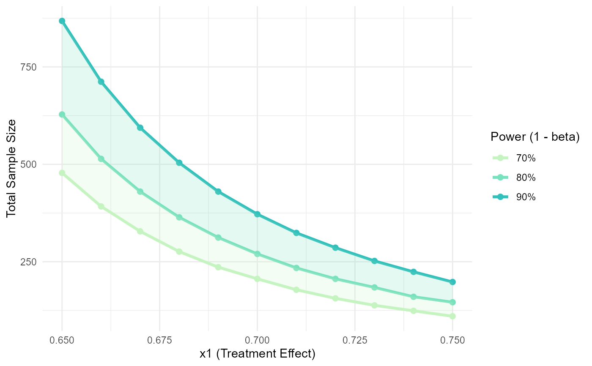
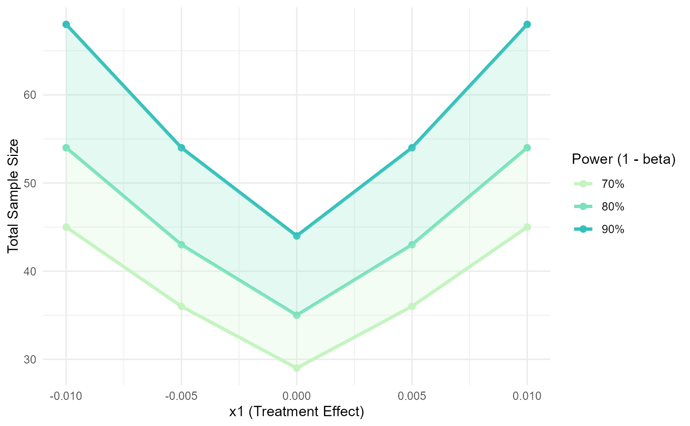

Calculate and visualize sample size across a range of treatment effects
Source:R/sample_size_range.R
sample_size_range.RdCalculates required sample sizes for specified power levels (70%, 80%, 90%)
across a range of treatment effect values (x1), while keeping the control
group value (x2) fixed. Internally calls sample_size() and generates a
plot to visualize how total sample size changes with varying x1.
Usage
sample_size_range(x1_range, x2, step = 0.1, ...)
# S3 method for class 'sample_size_range'
print(x, ...)Arguments
- x1_range
Numeric vector of length 2 specifying the range of values to evaluate for the treatment group mean or proportion (
x1).- x2
Numeric value for the control group mean or proportion (reference value).
- step
Numeric value indicating the step size to increment across the
x1_range. Default: 0.1.- ...
Further arguments passed to or from other methods.
- x
An object of class "sample_size_range".
Value
An object of class "sample_size_range" containing the dataframe of sample size calculations and the ggplot object. A plot is also generated to visualize the relationship between treatment effects and required sample sizes.
Methods (by generic)
print(sample_size_range): Print method for objects of class "sample_size_range".
References
Chow, S.-C., Shao, J., Wang, H., & Lokhnygina, Y. (2017). Sample Size Calculations in Clinical Research (3rd ed.). Chapman and Hall/CRC. https://doi.org/10.1201/9781315183084
Examples
# Two-sample parallel non-inferiority test for proportions with 10% dropout
sample_size_range(x1_range = c(0.65, 0.75), x2 = 0.65, step = 0.01,
sample = "two-sample", design = "parallel", outcome = "proportion",
type = "non-inferiority", delta = -0.1, dropout = 0.1)
#>
#> Sample Size Range Analysis
#>
#> Treatment range (x1): 0.650 to 0.660
#> Control/Reference (x2): 0.650
#> Step size: 0.010
#>
#> 70% Power: Total n = 110 to 478
#> 80% Power: Total n = 146 to 628
#> 90% Power: Total n = 198 to 868
#>
#> Sample size increased by 10.0% to account for potential dropouts.
#>

# One-sample equivalence test for means
sample_size_range(x1_range = c(-0.01, 0.01), x2 = 0, step = 0.005,
sample = "one-sample", outcome = "mean", type = "equivalence",
SD = 0.1, delta = 0.05, alpha = 0.05)
#>
#> Sample Size Range Analysis
#>
#> Treatment range (x1): -0.010 to -0.005
#> Control/Reference (x2): 0.000
#> Step size: 0.005
#>
#> 70% Power: Total n = 29 to 45
#> 80% Power: Total n = 35 to 54
#> 90% Power: Total n = 44 to 68
#>
